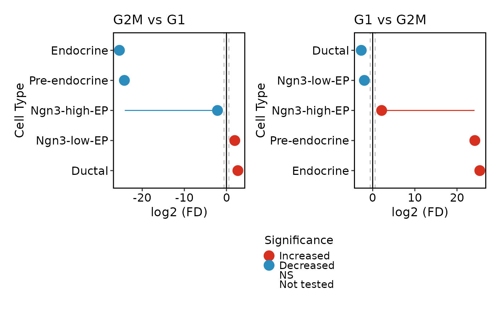

RunProportionTest performs differential abundance testing for cell proportions.
The function acts as a dispatcher and routes to one of the method-specific
implementations: permutation, milo, sccoda, or propeller.
"propeller" uses the optional speckle backend for pairwise empirical
Bayes moderated tests; see RunPropeller for transformations and parameters.
Usage
RunProportionTest(
object,
group.by,
split.by = NULL,
comparison = NULL,
proportion_method,
sample.by = NULL,
pseudo_sample_n = 3L,
allow_pseudo_samples = FALSE,
n_permutations = 1000,
FDR_threshold = 0.05,
log2FD_threshold = log2(1.5),
include_all_cells = FALSE,
seed = 11,
verbose = TRUE,
...,
srt = NULL
)Arguments
- object
A
Seuratobject.- group.by
Metadata column(s) used to color cells.
- split.by
Metadata column that identifies the condition groups to compare. For sample-level methods, if
split.byis omitted andsample.byis provided,sample.byis treated as the condition column; a separate biological sample column is still required unless descriptive virtual samples are explicitly enabled.- comparison
Optional pairs of condition labels. Each pair is
c(group1, group2).obs_log2FDislog2(group1 / group2), matching RunDEtest / Seuratident.1vsident.2: positive values mean the cell type is more abundant ingroup1. IfNULL, all pairwise comparisons are generated in both directions.- proportion_method
Differential abundance method. One of
"permutation","milo","sccoda", or"propeller". This argument is required. Alias values such as"permutation_test"and"perm"are accepted and normalized to"permutation".- sample.by
Metadata column that identifies biological samples. Required for
"milo","sccoda", and"propeller"unlessallow_pseudo_samples = TRUE. For Milo and Propeller, sample IDs may recur across two conditions for a fully paired design; partially paired comparisons are rejected.- pseudo_sample_n
Number of virtual samples per
split.bygroup when a sample-level method has no usablesample.byandallow_pseudo_samples = TRUE. Virtual samples are descriptive only; inferential statistics are set toNA.- allow_pseudo_samples
Explicitly allow descriptive virtual samples when biological sample IDs are unavailable. The default is
FALSEbecause partitioning cells does not create biological replicates.- n_permutations
Number of permutations for permutation-based test.
- FDR_threshold
FDR value cutoff for significance.
- log2FD_threshold
Absolute value of log2FD cutoff for significance.
- include_all_cells
Whether to include all cell types in the complete grid for permutation mode.
- seed
Random seed, including for permutation testing.
- verbose
Whether to print the message. Default is
TRUE.- ...
Additional arguments passed to the selected method function.
- srt
Deprecated alias for
object; supply exactly one of the two. It will be removed in scop 1.0.0.
References
Miller SA, Policastro RA, Sriramkumar S, et al. (2021). LSD1 and Aberrant DNA Methylation Mediate Persistence of Enteroendocrine Progenitors That Support BRAF-Mutant Colorectal Cancer. Cancer Research, 81(14), 3791-3805. doi:10.1158/0008-5472.CAN-20-3562
Examples
Restored example output generated on 2026-10-13 from SCOP 53ed7e08f. These historical examples have not been revalidated against the current release. Current usage and arguments are documented above.
data(pancreas_sub)
pancreas_sub <- RunProportionTest(
pancreas_sub,
group.by = "CellType",
split.by = "Phase",
proportion_method = "permutation",
comparison = list(c("G2M", "G1"))
)
#> ℹ [2026-10-13 17:10:56] Start proportion test ("permutation")
#> ℹ [2026-10-13 17:10:56] Running comparison: "G2M" vs "G1"
#> ℹ [2026-10-13 17:10:56] Running comparison: "G1" vs "G2M"
#> ✔ [2026-10-13 17:10:57] Proportion test completed ("permutation")
ProportionTestPlot(
pancreas_sub
)
